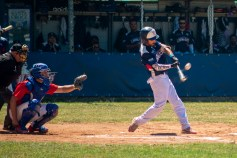

Il baseball è uno sport di squadra nato negli Stati Uniti nel XIX secolo. È uno degli sport più popolari al mondo, praticato in oltre 100 paesi e considerato il passatempo nazionale americano.
Due squadre si alternano nei ruoli di attacco e difesa. La squadra in attacco cerca di segnare punti colpendo la palla lanciata dall'avversario e correndo attraverso le basi, mentre la difesa cerca di eliminare i battitori avversari prima che possano completare il giro delle basi.
Una partita regolamentare si articola in 9 inning. Ogni inning è diviso in due parti: nella prima metà attacca la squadra ospite, nella seconda la squadra di casa.

Da qui il battitore colpisce la palla. È anche il punto finale del giro delle basi per segnare un punto.
La prima tappa che il corridore deve raggiungere dopo aver battuto la palla.
Situata al centro del diamante, è la seconda tappa del percorso.
L'ultima base prima di tornare a casa base per segnare il punto.
Il punto rialzato da cui il lanciatore lancia la palla verso il battitore.
Il leader della difesa. Lancia la palla verso il battitore cercando di eliminarlo con strike o inducendolo a colpire male.
Si posiziona dietro il battitore e riceve i lanci. Dirige la strategia difensiva e comunica con il lanciatore.
Difendono il diamante interno: prima base, seconda base, interbase e terza base.
Coprono l'esterno campo: esterno sinistro, centro e destro. Catturano i lanci lunghi.
Cerca di colpire la palla lanciata dal pitcher e raggiungere la base senza essere eliminato.
Una volta raggiunta una base, cerca di avanzare e tornare a casa per segnare un punto.
Lancio valido non colpito dal battitore o colpito in fallo. Tre strike = eliminazione.
Lancio fuori dalla zona di strike non colpito. Quattro ball = base su ball (passaggio libero).
Eliminazione di un giocatore in attacco. Tre out e la squadra passa in difesa.
Battuta che esce dal campo. Il battitore fa il giro completo delle basi e segna un punto.
Un turno completo di attacco per entrambe le squadre. Una partita dura 9 inning.
Punto segnato quando un corridore completa il giro delle basi e torna a casa base.
Battuta valida che permette al battitore di raggiungere almeno la prima base.
Azione difensiva che elimina due giocatori avversari con un'unica giocata.
Vieni a trovarci al Lancers Field! Organizziamo sessioni di prova gratuite per tutti.